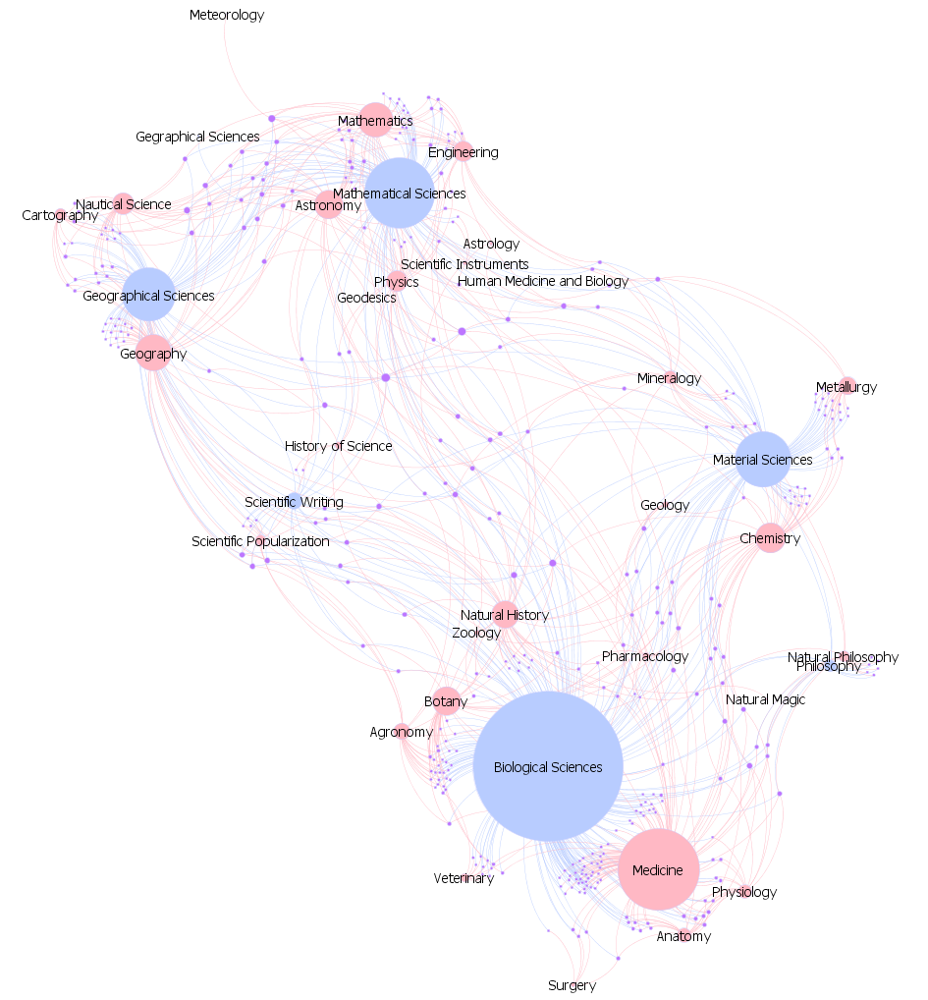
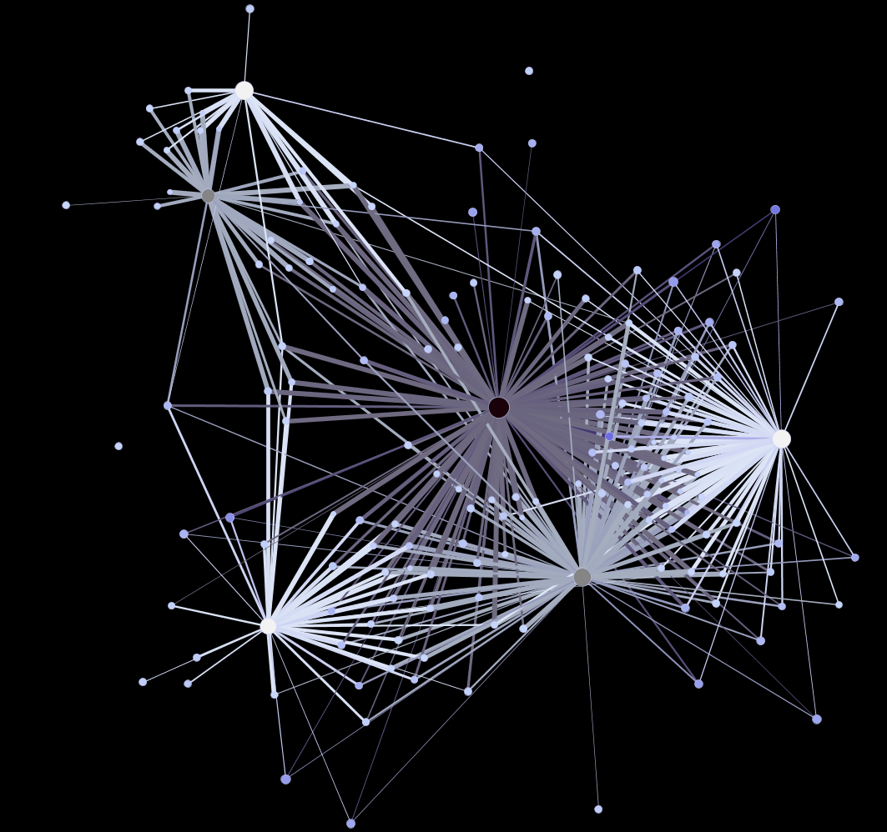
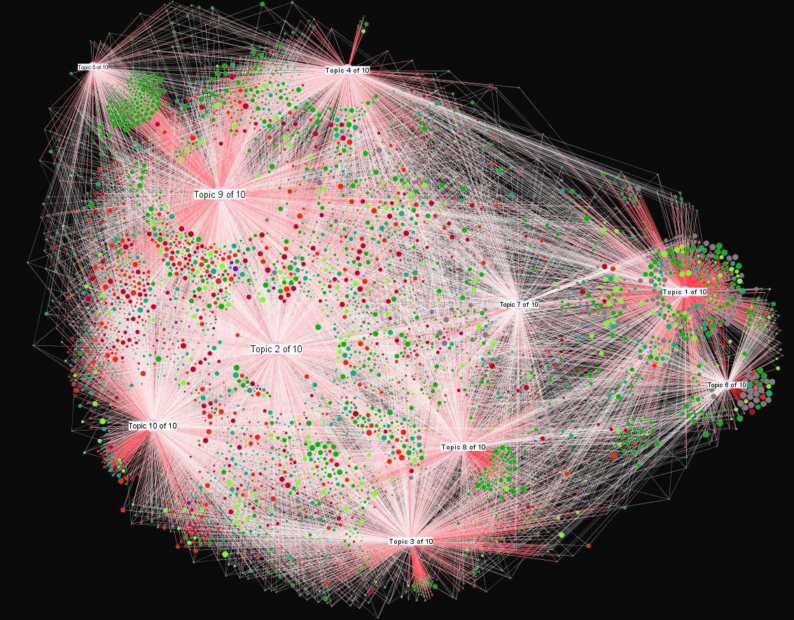
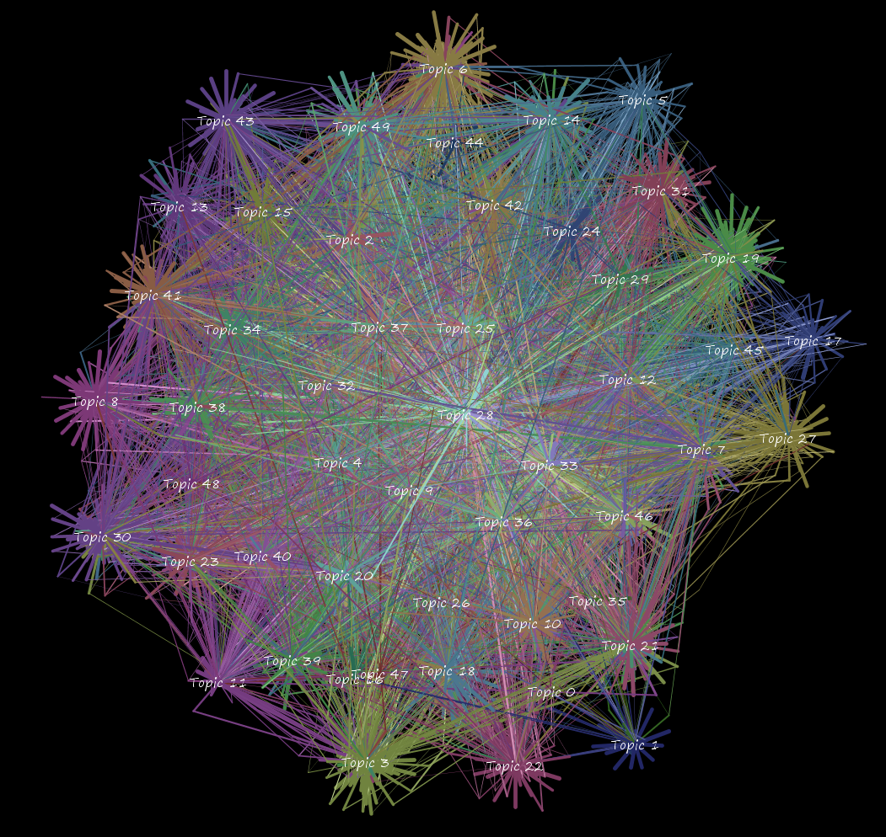
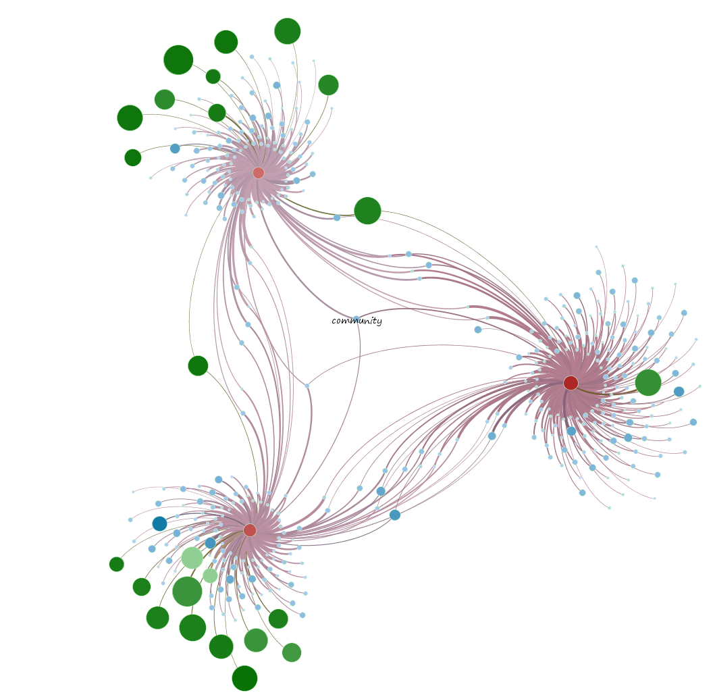
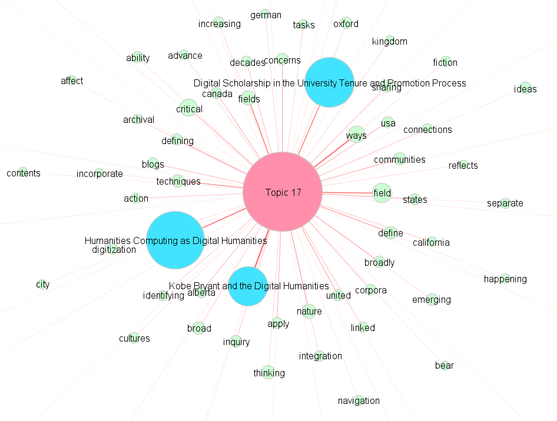
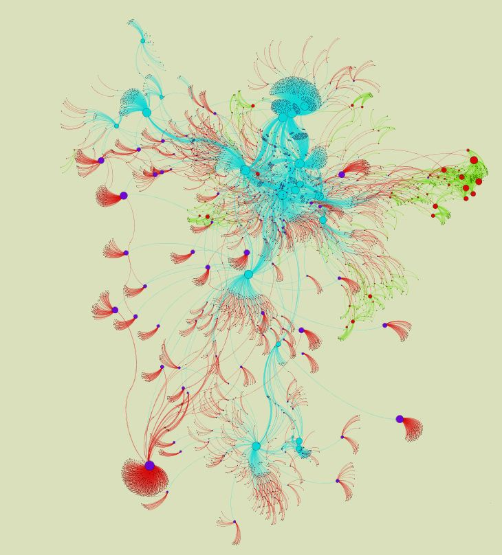
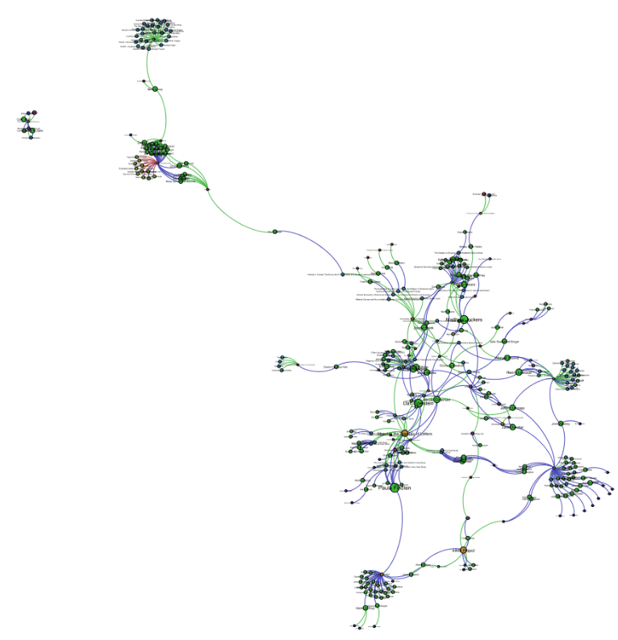

The next workshop will be held at Stanford in Meyer Library 220 (the Flex classroom) on November 11th at 11AM.
PDF of the Lecture Portion of the Workshop
Overview of Network Analysis and Representation
I’ll occasionally be able to provide two-hour workshops on the basics of using Gephi, the network analysis package with which I’ve made the images and videos below. The workshops will focus on:
- getting graph data into Gephi using .gexf, .csv and database connections
- running Filters, Analytics and Layouts on the data
- optimization of Gephi for large datasets
- overview of layout algorithms and strategies for their use
- creating dynamic (time-enabled) networks
- general Q&A
The last bit is probably the most valuable and hardest to quantify. Gephi is an incredibly powerful visualization package but its documentation still reflects its beta nature. Many of the most basic functions have unintuitive or opaque mechanisms for their use and I’ll be happy to point them out.
You will need to bring your own laptop with Gephi already installed. I’ll provide a variety of datasets to work with. If you already have a dataset that you’d like to examine and need some help getting it into the proper format, please contact me before the workshop and I may be able to get it into .gexf in time for the workshop.







